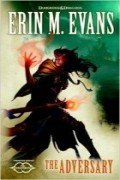

The Adversary
Écrit par Erin M. Evans, publié en Décembre 2013.
AVERTISSEMENT
Cette page révèle certaines informations qui pourraient gâcher la lecture du roman. Si vous pensez lire ce livre dans un futur proche, mieux vaut ne pas parcourir ce résumé !
Farideh et sa soeur jumelle Havilar sont deux tieffelines de 17 ans, filles adoptives d'un drakéide du nom de Mehen. Elles descendent de Bryseis Kakistos, une des 13 sorcières et sorciers qui ont permit à Asmodée de devenir un dieu. Leur puissante ascendance en font donc immanquablement des "cibles" de choix pour de nombreux diables. De fait, Farideh est elle aussi sorcière [warlock] et possède un pacte avec un demi-diable nommé Lorcan. Une amitié s'est établie entre eux, Farideh se sentant même attirée par Lorcan. De son côté, Havilar entretient une relation avec Brin, un prétendant au trône du Cormyr.
1478. Proskur, au sud-ouest du Cormyr. Afin de protéger Havilar et Lorcan, Farideh scelle un accord avec Sairché, soeur et ennemie de Lorcan au service de Glasya : Sairché protégera ces trois là des autres diables pendant 10 ans, en échange de deux faveurs "contre un ennemi commun". Et la diablesse donne un collier de rubis à Farideh. Les deux jumelles se retrouvent alors via un portail près de Waterdeep et se rendent au siège local des Ménestrels dont elles connaissent le dirigeant, Tam Zawad, et son secrétaire, Dahl Peredur, un ancien paladin d'Oghma. Là, elles se rendent compte avec stupeur que 7 ans et demi ont passé.
1486. Arrive le jour où Sairché vient réclamer sa première faveur. Pour cela elle tend une bague de portail à Farideh et lui demande de l'emprunter. La tieffeline laisse son collier à sa sœur et passera le portail, involontairement accompagnée de Dahl, et les deux se retrouvent face à des shadar-kaï dans une forteresse shadovar. Le combat terminé, Dahl se cache dans le complexe et envoie quelques messages magiques aux Ménestrels pendant que Farideh est contrainte d'accompagner le magicien Adolican Rhand, un vieil ennemi qui a jadis essayé de l'empoisonner et qui lui présente ce qu'il reste des fontaines de la Mémoire, la forteresse étant installée au sein d'un cratère des Pics Perdus, dans la Haute Forêt. L'eau de ces fontaines permet de voir des événements si l'on y jette quelques pétales. Pendant ce temps, à Waterdeep, Havilar, Lorcan et Brin partent à la recherche de la disparue, suivis par Mehen et des agents des Ménestrels. Ceux-ci tombent sur un petit convoi de morts-vivants mené par Zahnya, une jeune Magicienne rouge du Thay qui se rend aux Pics Perdus pour le détruire. Voulant rejoindre Farideh, Sairché se retrouve par erreur - car maintenant c'est Havilar qui porte le collier de rubis - face à Lorcan et, prise dans son propre piège par son frère, elle finie dans une cage du sixième enfer de Malbolge, là même où elle a retenu auparavant les deux sœurs durant plus de 7 ans. Ayant "éliminé" sa rivale, Lorcan est plus tard prié par trois hellwasps de se présenter face à Glasya. Pendant ce temps Havilar et Brin affronteront un veserab.
Dans le camp autour de la forteresse, les "prisonniers" expliquent à Dahl ce qui se passe. Le magicien a enlevé de nombreuses personnes, des individus ou des villages entiers, et les sonde à l'aide des fontaines pour savoir qui parmi eux sont des Élus. Quelques-uns semblent en effet avoir des pouvoirs, plus ou moins importants, mais la majorité n'en ont pas, du moins pour le moment, parce que certains sentent naître quelque chose en eux depuis quelques temps. Mais ce procédé de détection est long, trop long. C'est d'ailleurs pour cela que Sairché a fait venir Farideh ici. La tieffeline peut "voir" les âmes "différentes" : un simple regard et les Élus lui apparaissent enluminés, ceci grâce à un don octroyé par Asmodée, car Farideh est une Élue du dieu des Enfers, à son insu. Finalement, Dahl et Farideh se retrouvent par hasard dans l'armurerie, alors qu'une jeune fille de l'Église de Shar, une Élue elle aussi, vient vérifier où en est l'expérience du magicien. L'ennemi commun est en effet Shar, la déesse des ténèbres.
Lorcan apprend l'accord entre sa sœur et Farideh, lequel inclue de le protéger à lui aussi, et décide de libérer Sairché, ne devant plus rien craindre d'elle. La diablesse lui explique alors ce qui se trame en coulisses. Le magicien croit qu'il trie les Élus pour Shar, mais en fait si les enfers l'aident, c'est parce qu'Asmodée compte bien récupérer pour lui-même les fragments de pouvoir divin qu'ils portent en eux, se renforçant tout en affaiblissant les autres dieux et faisant porter la responsabilité de tout ceci sur la déesse. Toutefois, la situation est encore plus compliquée que cela. Sairché oeuvre pour Glasya et un autre diable, Magros, oeuvre lui pour Levistus, le maître de la cinquième strate des enfers. Les deux veulent faire échouer le plan de leur supérieur, mais en faisant porter la responsabilité de l'échec sur l'autre, afin d'attirer sur celui-ci la colère d'Asmodée et sur ce dernier les foudres de Shar, avec comme conséquence d'affaiblir le maître des Neuf enfers et alors, pourquoi pas, prendre sa place.
Finalement, Farideh, Dahl et tous ceux partis de Waterdeep à sa recherche se retrouvent dans le camp et, avec différents détenus, dont un elfe noir, organisent la résistance. Ils n'ont qu'un temps compté pour mettre à l'abri tous les prisonniers avant que la Magicienne rouge du Thay, qui possède un accord avec Magros, ne détruise le camp à l'aide d'un puissant rituel. La liche Szass Tam compte bien ne rien laisser aux mains du Netheril. Et tout le complexe sera effectivement détruit. Qui aura eu le temps de s'échapper ?